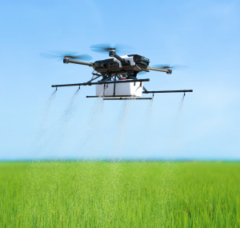

Site Oficial
arrow_outward Sou Felipe, criador deste site para o concurso “Agrinho”, promovido pela SENAR-PR e SEED-PR.
Combinando tecnologia e interesse pelo desenvolvimento rural, meu objetivo é destacar como a inovação
está transformando o campo.
Inove no campo, colha o futuro sustentável
 Nosso site tem a missão de fornecer dados sobre o retorno às áreas rurais e o impacto do avanço
tecnológico nessas comunidades.
Nossa visão é conectar pessoas interessadas, integrando tradição e inovação para um futuro rural
sustentável.
Nosso site visa ser uma fonte confiável de informações sobre o retorno às áreas rurais, com base em
dados e estudos de casos.
Oferecemos uma visão completa das tecnologias que estão revitalizando o campo, desde inovações agrícolas
até soluções de conectividade e gestão rural.
Também disponibilizamos recursos educativos, como guias e tutoriais, para esclarecer as mudanças
tecnológicas e suas aplicações no meio rural.
Além disso, destacamos inovações concretas e seus impactos positivos na vida rural e nas comunidades.